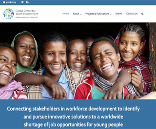
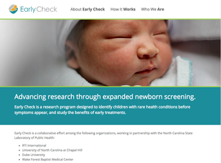
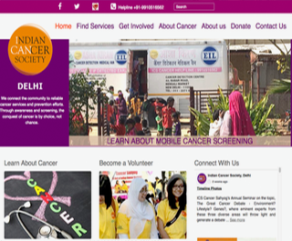
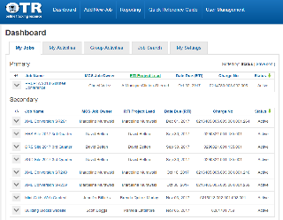

Resume
Education
Experience
Skills
ColdFusion
PHP
JavaScript
JQuery
HTML5
CSS
Responsive Design
SQL Server
MYSQL
Bootstrap
WordPress
XML
Dreamweaver
Adobe Acrobat
Section 508 Accessibility
Photoshop
Portfolio
Neonatal Research Network
Team Developer Resource
ColdFusion, JavaScript, Responsive Design
HIV Risk Reduction Toolkit

Team Developer Resource
ColdFusion, Jekyll, JavaScript, GitHub
Adolescent Pregnancy Prevention
Lead Developer
ColdFusion, SQL Server, JavaScript, Responsive Design
Sexual Assault Kit Initiative
Team Developer Resource
ColdFusion, SQL Server, JavaScript, Responsive Design
Global Center for Youth Employment
Team Developer Resource
Wordpress, PHP, CSS3, Responsive Design
Early Check Newborn Screening
Team Developer Resource
Wordpress, PHP, CSS3, Responsive Design
Indian Cancer Society
Team Developer Resource
Wordpress, PHP, CSS3, Responsive Design
USAID Energy Mini-Grids Toolkit

Team Developer Resource
HTML,SHTML,JavaScript
Digital Product Toolkit
Lead Developer
HTML, CSS3, JavaScript, Responsive Design
Online Tracking Resource (OTR)
Lead Developer
ColdFusion, JavaScript, SQL Server, CSS3, Responsive Design